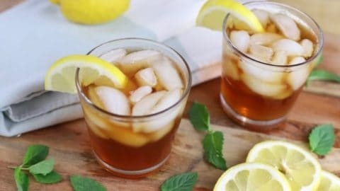

Tea Recipe

Description
Southern sweet tea, perfect for hot summer days!
Ingredients
- 1 pinch baking soda
- 2 cups boiling water
- 6 tea bags
- ¾ cup white sugar
- 6 cups cool water
Directions
-
Sprinkle a pinch of baking soda into a 64-ounce, heat-proof, glass pitcher. Pour in boiling water, and add tea bags. Cover, and allow to steep for 15 minutes.
-
Remove tea bags, and discard; stir in sugar until dissolved. Pour in cool water, then refrigerate until cold.